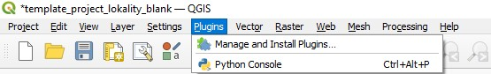
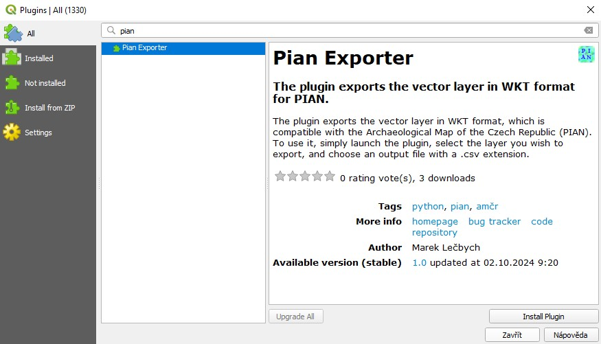

Import geometrie PIAN
Preferované způsoby:
- Pomocí AMČR GIS konvertoru SHP na WKT – doporučená cesta v případě práce v ArcGIS.
- Pomocí QGIS pluginu Pian Exporter – doporučená cesta v případě práce v QGIS.
Další možnosti:
Úvod
Cílem níže popsaných postupů je vytvořit tabulku ve formátu CSV (Comma Separated Values, .csv), pomocí které lze importovat geometrie PIAN do AMČR.
Definice formátu souboru pro import
CSV soubor musí mít následující parametry:
- Základní formát (obvykle jde o výchozí nastavení pro CSV):
- kódování: UTF-8;
- oddělovač pole:
,(čárka – znak s UTF-8 kódem U+002C); - oddělovač řetězců:
"(horní uvozovky – znak s UTF-8 kódem U+0022).
- Soubor obsahuje následují pole:
label– pole s jedinečným popiskem prvku (např. identifikátor);epsg– pole obsahující kód souřadnicového systému – akceptovány jsou souřadnicové systémy 4326 (WGS 84) a 5514 (S-JTSK / Krovak East North);geometry– pole obsahují souřadnice ve formátu WKT (Well-known Text) podle typu geometrie:POINT(souřadnice WKT);LINESTRING(souřadnice WKT);POLYGON(souřadnice WKT).
Všechna textová pole v CSV vč. geometrií by měla být obalena oddělovačem textu ("), a to zejména kvůli správnému čtení čárky jako oddělovače údajů v rámci geometrií.
Při nahrávání CSV souborů systém akceptuje i složené geometrie (MULTIPOINT, MULTILINESTRING, MULTIPOLYGON), ale je primárně určen pro validní jednoduché geometrie. Při použití multi* prvků dojde při importu k rozdělení na jednotlivé jednoduché geometrie, protože PIAN nikdy nemůže být ve formátu složené geometrie. Doporučujeme proto tyto typy geometrií nepoužívat, mohou však vznikat např. při vytvoření shapefile přes ESRI ArcGIS, přestože obsahem prvku je jednoduchá geometrie. V takovém případě bude obsah do AMČR importován správně.
Příprava importního CSV
Předpokladem všech způsobů přípravy importu je:
AMČR GIS konvertor
AMČR GIS konvertor najdete na stránce https://amcr-convert.aiscr.cz/.
Upload souborů
Pomocí tlačítka Procházet vyberte soubory shapefilu, které budou použity pro převod (shapefile je multisouborový formát, který je tvořen více dílčími soubory). Jako povinné je třeba zvolit soubory .shp (obsahuje vlastní zakreslené geometrie pro vytvoření PIAN) a .dbf (obsahuje atributy jednotlivých zakreslených prvků). Doporučené je připojit i soubory .prj (obsahuje informace o souřadnicovém systému a projekci) a .cpg (obsahuje informace o kódování pro správnou identifikaci znaků)
Informace o shapefilu
- Konvertor po vybrání souborů ověří jejich správnost a příslušnost k jednomu shapefilu.
- Pokud není připojen soubor .prj, je třeba v poli
EPSGzvolit souřadnicový systém, ve kterém data jsou. Upozorňujeme, že volba souřadnicového systému neslouží pro převod mezi jednotlivými systémy! - Pokud vstupní soubor obsahuje pole s popisem jednotlivých prvků (např. číslo sondy, pojmenování plochy atp.), lze toto pole zvolit v poli
Název. Pokud pole s popisem neexistuje, nebo není zvoleno, jsou jednotlivým prvkům přiděleny automatické popisky (Prvek_1, Prvek_2 atd.) - Načtená data vidíte v tabulce níže. Zde vidíte popis jednotlivých prvků v poli
Label. Popis lze v tomto poli editovat (ať již je generován automaticky nebo je jeho zdrojem pole s popisem ze vstupního souboru). Ve sloupciEPSGvidíte zvolený nebo načtený souřadnicový systém. Ve sloupciExportlze pak výběrem zvolit, které prvky ze vstupního shapefilu se mají exportovat.
Export dat
- V části
Export datvidíte náhled převedených dat. TlačítkemStáhnout CSVsi můžete stáhnout hotový CSV soubor připravený pro import geometrie PIAN do AMČR. Převedená data lze také jen zkopírovat (ručně nebo pomocí tlačítkaKopírovat do schránky) pro vytvoření CSV souboru ručně, nebo pro práci s daty jiným způsobem. - Pokud takto zpracováváte více souborů stejného typu, lze se pomocí tlačítka
Vyčistit a nahrát dalšípřepnout rovnou do výběru nových souborů. TlačítkemVyčistitse pak vrátíte na výchozí obrazovku.
QGIS plugin Pian Exporter
Uživatelé QGIS mohou využít volně dostupný plugin Pian Exporter vytvořený Markem Lečbychem. Plugin umožňuje rychle a efektivně exportovat prostorová data z vybrané vrstvy do CSV, který je bez nutnosti další úpravy možné importovat do webové aplikace AMČR. V knihovně QGIS pluginů najdete Pian Exporter zde.
Instalace pluginu
- V aplikaci QGIS použijte nástroj manažera pluginů.

- Vyhledejte Pian Exporter (například zadáním klíčových slov PIAN nebo AMČR) a potvrďte jeho instalaci.

V aplikaci QGIS se plugin zobrazí v podobě ikony
Export dat
- V aplikaci QGIS klikněte na ikonu Pian Exporter.
- Vyberte z rolovací nabídky vrstvu, kterou chcete exportovat.
- Zadejte název a vyberte místo uložení výsledného souboru.
- Importujte výsledný soubor CSV do AMČR, viz postup.
Manuální export CSV z QGIS
- V QGIS si otevřeme vektorovou vrstvu, která obsahuje jednu či více geometrií jako podklad pro PIAN (souřadnicový systém WGS 84 – EPSG:4326 nebo S-JTSK / Krovak East North – EPSG: 5514).

- Vrstvu exportujeme jako WKT:
- kliknout pravým tlačítkem na vrstvu v seznamu vrstev –
Export–Uložit prvky jako...;

- v nastavení exportu zvolíme:
- typ geometrie (GEOMETRY):
AS_WKT; - oddělovač (SEPARATOR):
COMMA; - kódování/encoding:
UTF-8; - souřadnicový systém (SRS):
WGS 84 - EPSG:4326neboS-JTSK / Krovak East North - EPSG: 5514.
- typ geometrie (GEOMETRY):
- kliknout pravým tlačítkem na vrstvu v seznamu vrstev –

- QGIS nám nabídne přidat vrstvy do mapy – lze přijmout (vrstva se přidá do seznamu vrstev) nebo ne (vrstva se nepřidá).


- Výsledný soubor otevřeme např. v Libre Office, v úvodním nastavení importu textu nastavíme/zkontrolujeme následující hodnoty:
- Znaková sada:
Unicode (UTF-8); - Možnosti oddělovače – Odděleno pomocí:
Čárka; - Oddělovač řetězců:
"; - ve spodní části okna pak vidíme náhled importovaných dat.
- Znaková sada:

- Z původních dat nás zajímá především pole s geometrií WKT a případně pole s názvem jednotlivých geometrií/PIAN, data je třeba upravit do požadovaného formátu (viz výše):
- vytvořit pole
labeljako první sloupec (vložením nebo úpravou a přesunem stávajícího pole na první místo); - vytvořit pole
epsgpro kód souřadnicového systému ve druhém sloupci; - pole
WKTpřejmenovat nageometry(třetí sloupec).
- vytvořit pole
- Výsledek uložíme jako soubor CSV

- Importujte výsledný soubor CSV do AMČR, viz postup.
Vytvoření CSV v textovém editoru
Alternativním postupem přípravy importního CSV souboru je jeho vytvoření v textovém editoru (např. Poznámkový blok, WordPad, Notepad++ atp.). Viz vzorový CSV soubor.
Úprava CSV v MS Excel není vhodná. Pokud CSV soubor ukládáme v Excelu (stačí i otevření a uložení původně validního souboru), tak program automaticky doplní další uvozovky k polím s textovými řetězci (např. ““POLYGON““) což způsobí nečitelnost souboru – lze ověřit např. při zobrazení v Notepad++ (nebo jiném textovém editoru – např. i v poznámkovém bloku) a zde i nadbytečné uvozovky odmazat.
- Otevřete textový editor (ukázka je v Poznámkovém bloku, ale stejně funguje i v ostatních zmíněných programech).
- Na první řádek vložte názvy polí oddělené čárkou podle definice výše:
"label","epsg","geometry".
- Na druhý řádek (případně na další řádky podle počtu geometrií k importu) vložte hodnoty pro tato pole opět oddělená čárkou.
Výsledný soubor může vypadat např. takto:
PIAN_1.csv
"label","epsg","geometry"
"plocha_1","4326","POLYGON ((14.076704183062645 50.11115525776103, 14.076893350212458 50.111165965335545, 14.076900488595527 50.11129088703842, 14.077332360768025 50.111273041080835, 14.077318084002115 50.11114455018662, 14.077478697619995 50.11113384261205, 14.07746799004542 50.1109054143555, 14.07756078902463 50.110901845163994, 14.07754651225872 50.1108268921422, 14.077471559236983 50.11070910882239, 14.077350206725612 50.11061274065173, 14.077260976937964 50.11060560226866, 14.076507877529536 50.110623448226306, 14.076515015912605 50.11106245878182, 14.076704183062645 50.111069597164885, 14.076704183062645 50.11115525776103))"
- Připravený soubor uložte ve formátu CSV.
- Při ukládání textového dokumentu v operačním systému Windows je třeba ručně dopsat k názvu souboru jako jeho koncovku .csv.

- Importujte výsledný soubor CSV do AMČR, viz postup.
Import do AMČR
- V AMČR u vybrané dokumentační jednotky (DJ) zvolíme tlačítkem
Další volby(+) možnostPIAN – importovat.

- Otevře se dialogové okno
Importovat PIAN, sem přetáhneme/nebo zvolíme připravený CSV soubor.

- Systém automaticky provede validaci nahrávaného souboru i geometrií, které obsahuje. Zvolíme vybranou geometrii kliknutím ve sloupci
IDpro vytvoření PIAN.

- V mapě se nám zobrazí importovaná geometrie – můžeme ji potvrdit, nebo ji případně dále editovat pomocí standardních nástrojů pro editaci PIAN dostupných v mapovém rozhraní AMČR.